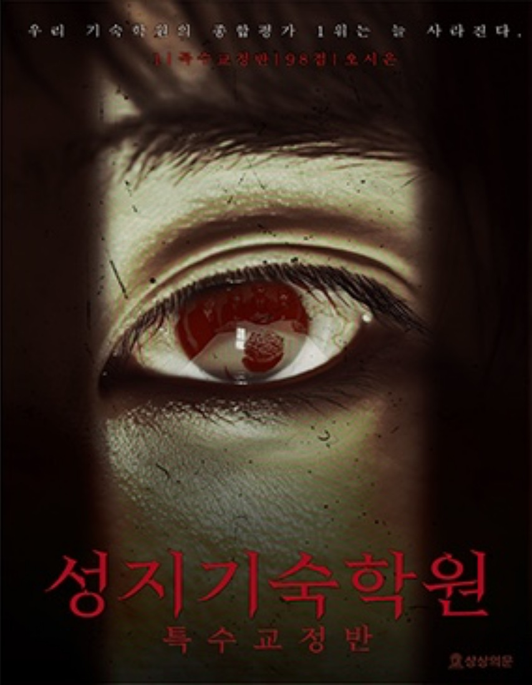

눈을 떴는데,
또 여기라면?
같은 기척,
같은 냄새,
같은 어둠.
나는 또다시 이 기숙학원에서
깨어났다.
“우리 기숙학원의 종합평가 1위는 늘 사라진다.”
공식 포스터 문구
성지기숙학원
특수교정반
상상의문 수원 2호점
공포 · 난이도 4/5 · 공포도 4/5

포스터: 상상의문 공식
다녀왔다면
한 줄 기록
줄거리·후기는 프로필 링크 · talkkaknote.com